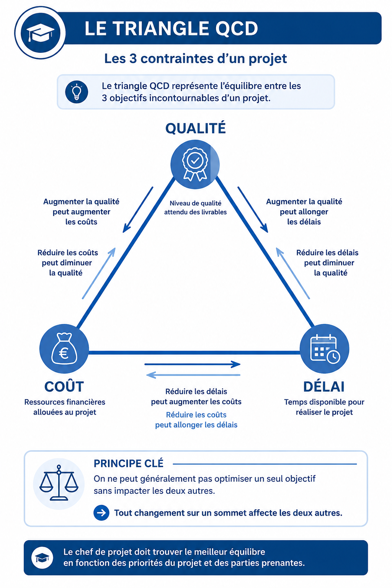
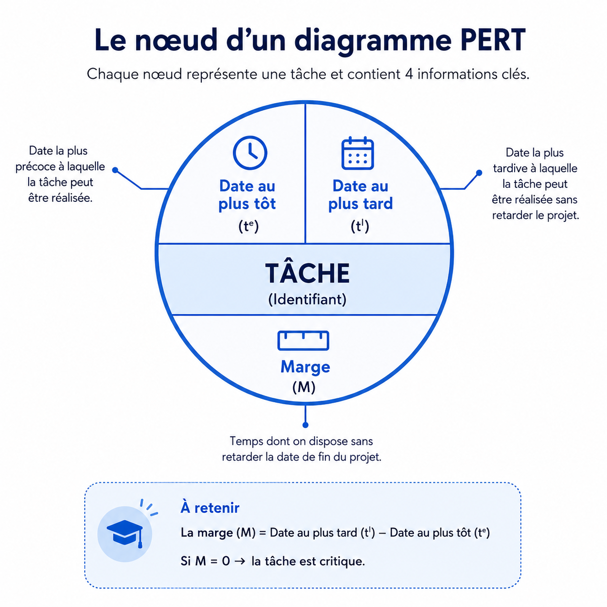
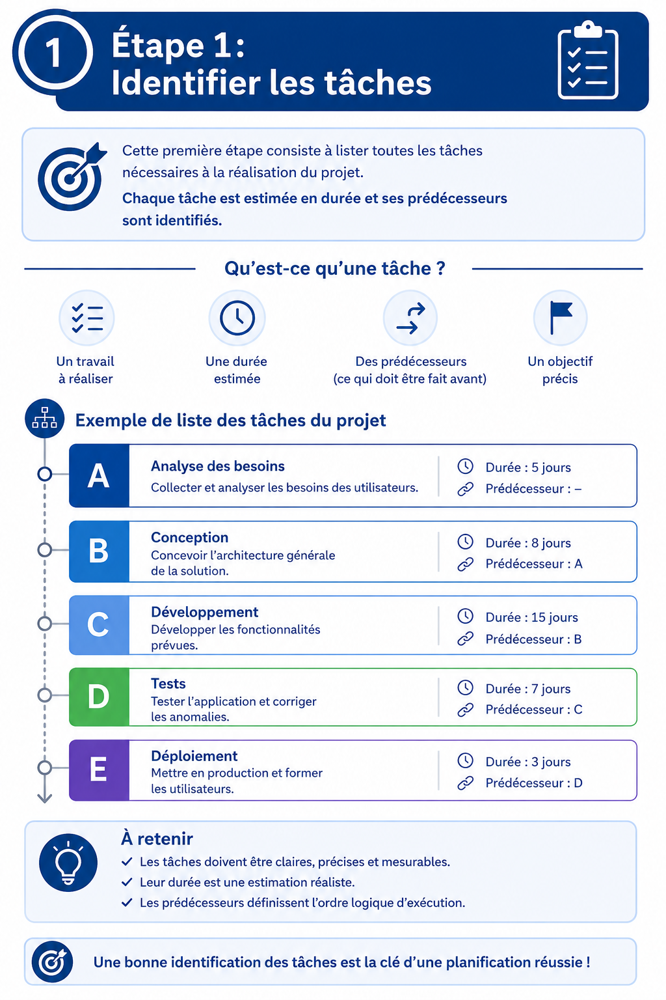
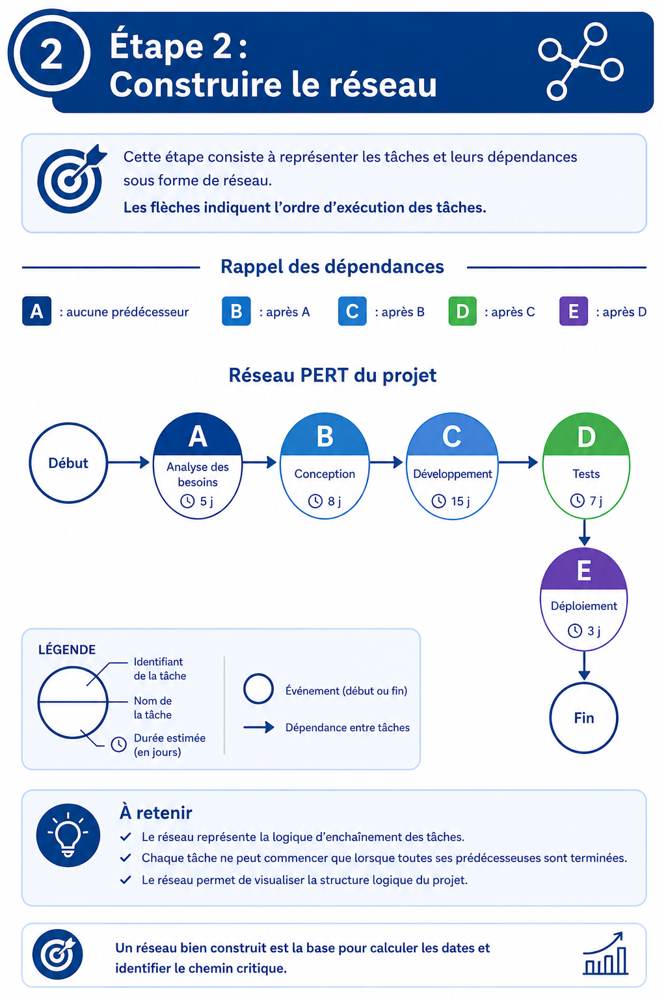
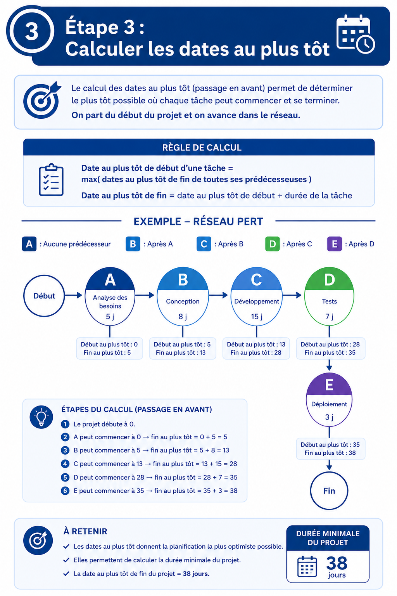
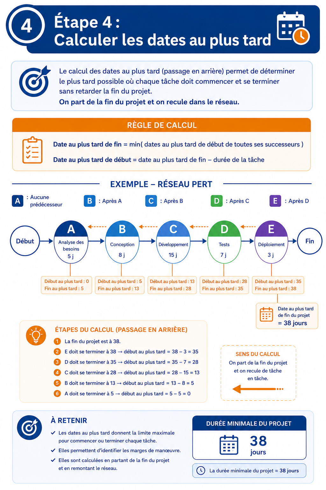
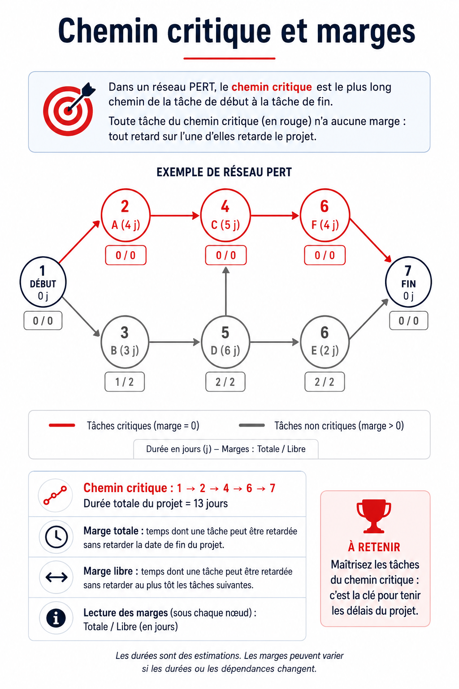
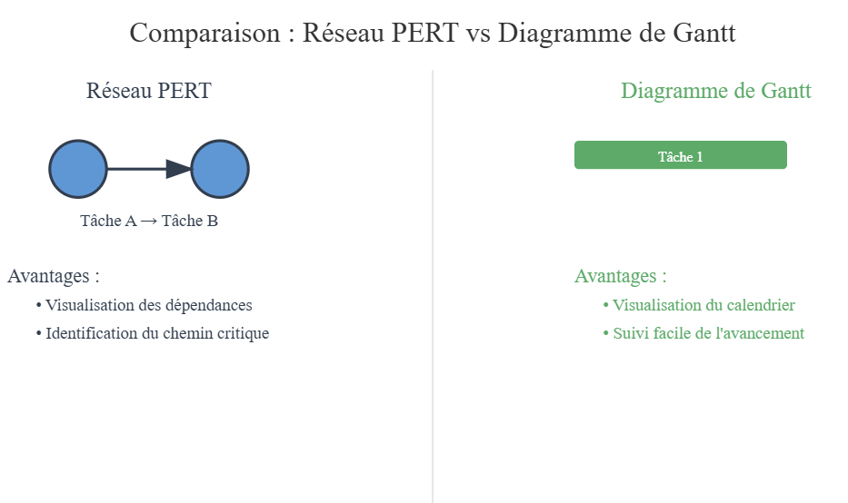
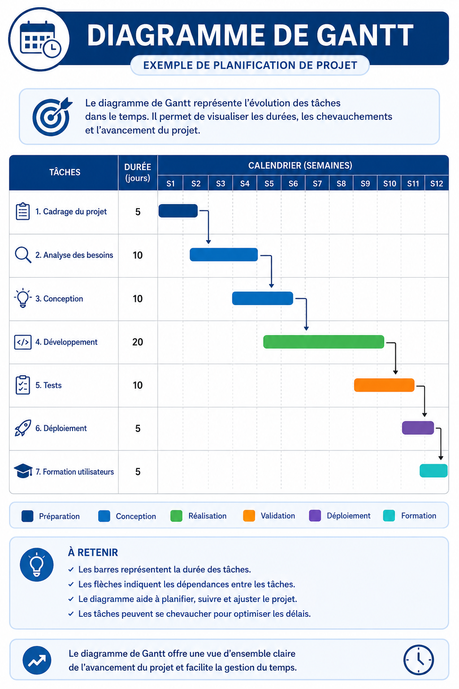
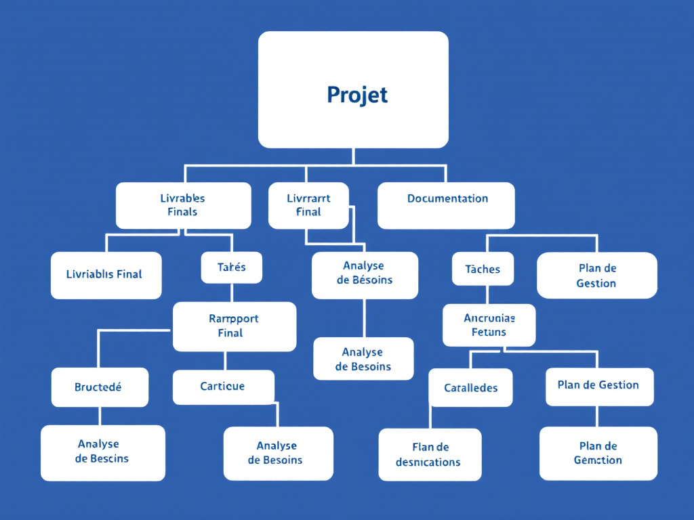

Fiches de révision · Simulateurs · QCM · Exercices corrigés
Un projet possède obligatoirement :

Les 3 contraintes sont interdépendantes : modifier l'une impacte les autres. Toute décision projet touche le périmètre QCD.
| Critère | Classique (Waterfall) | Agile (Scrum...) |
|---|---|---|
| Cycle de vie | En cascade (séquentiel) | Incrémental / itératif |
| Documentation | Lourde, complète | Restreinte, légère |
| Contractuel | ✅ Plus contractuel | ❌ Moins contractuel |
| Chef de projet | Dirige l'équipe | Soutient l'équipe (Scrum Master) |
| Objectif principal | Respecter coûts & délais | Satisfaction du client |
| Tâches | Figées dès le début | User stories (évoluent) |
| Planning | Planning global | Backlog produit |
| Chemin critique | PERT | Priorités métier |
| Dates | Dates fixes | Sprints (2–4 semaines) |
| Rôle décisionnaire | Chef de projet | Product Owner / Scrum Master |
Program Evaluation Review Technique — Outil de planification qui répond à 3 questions clés :

Date au plus tôt : date de début au plus vite (en avançant)
Date au plus tard : date limite sans retarder le projet (en reculant)
Marge = tard − tôt. Si = 0 → tâche critique






Entrez vos tâches, cliquez sur Calculer pour obtenir les dates et le chemin critique.
| Tâche | Durée | Prédécesseurs (ex: A,B) |
|---|
PERT est peu utilisé en Agile : trop rigide, estimations vite obsolètes, impossible de tout prévoir au départ.
COnstructive COst MOdel — modèle d'estimation de l'effort et de la durée d'un développement logiciel, créé par Barry Boehm en 1981 (analysé sur 63 projets de 2 000 à 100 000 lignes).
| Type de projet | a | b | c | d | Description |
|---|---|---|---|---|---|
| Simple (organique) | 2,40 | 1,05 | 2,50 | 0,38 | Petite équipe (2–8), domaine maîtrisé |
| Moyen (semi-détendu) | 3,00 | 1,12 | 2,50 | 0,35 | Difficulté moyenne, expérience limitée |
| Complexe (embarqué) | 3,60 | 1,20 | 2,50 | 0,23 | Temps réel, sécurité, contraintes fortes |
COCOMO II intègre 15 facteurs supplémentaires là où COCOMO 81 n'en avait que 2 (difficulté + LOC).

Quand une ressource est en surcharge (fait trop de tâches simultanées), on peut :
| Outil | Usage principal | Points forts | Limite |
|---|---|---|---|
| PERT | Phase de planification | Chemin critique visible, interdépendances claires | Pas de % d'avancement |
| Gantt | Phase d'exécution | Suivi du statut, durées visibles | Chemin critique difficile à trouver |
Les deux outils sont complémentaires.
Individus, groupes, personnes morales. Recrutement interne ou externe. Intervention ponctuelle ou sur toute la durée.
Machines, logiciels, licences, locaux, matières premières. Biens temporaires ou consommables à coût unitaire.
Budget du projet. Finance les RH, les achats matériels, les frais de déplacement, etc.
Délais par tâche. Dépend des ressources humaines disponibles.
Une ressource a plus de travail que sa capacité.
Ex: dev assigné à 3 tâches simultanément.
Conséquences : retard + stress + baisse qualité + erreurs = ralentissement du projet.
Une ressource n'est pas utilisée à pleine capacité.
Ex: dev qui attend des specs.
Conséquences : perte de temps + coûts inutiles = argent perdu.
Certaines compétences sont peu disponibles et critiques (ex: expert cybersécurité).
Ces ressources deviennent un goulot d'étranglement = risque projet majeur.

Décomposition hiérarchique du projet en tâches plus petites. Permet d'estimer progressivement l'ensemble.
Réalise la tâche. Peut y en avoir plusieurs.
Responsable final, décideur. Un seul A par tâche !
Donne un avis, expertise. Communication bidirectionnelle.
Est informé du résultat. Communication unidirectionnelle.
| Tâche | Chef projet | Informatique | Marketing | Formation | Ventes |
|---|---|---|---|---|---|
| Expression des besoins | R |
R A |
I |
C |
|
| Cahier des charges | R A |
C |
R |
I |
|
| Développement | A |
R |
I |
||
| Formation utilisateurs | R A |
||||
| Mise en production | A |
R |
R |
I |
Énoncé : Un CRM est à développer. Projet simple, équipe réduite. Taille estimée : 40 000 lignes. Estimer la taille de l'équipe avec COCOMO.
| Tâche | Durée (min) | Prédécesseurs | Tôt | Tard | Marge |
|---|---|---|---|---|---|
| A — S'installer canapé | 1 | — | 0 | 8 | 8 |
| B — Prendre télécommande | 1 | — | 0 | 0 | 0 ★ |
| C — Allumer télé | 1 | B | 1 | 1 | 0 ★ |
| D — Mettre Netflix | 1 | C | 2 | 2 | 0 ★ |
| E — Choisir le film | 5 | D | 3 | 3 | 0 ★ |
| F — Mettre en route le film | 1 | E | 8 | 8 | 0 ★ |
| G — Regarder le film | 120 | A, F | 9 | 9 | 0 ★ |
Données :
| Tâche | Durée (j) | Prédécesseurs | Tôt | Tard | Marge |
|---|---|---|---|---|---|
| A — Dossier administratif | 20 | — | 0 | 0 | 0★ |
| B — Installation chantier | 10 | A | 20 | 20 | 0★ |
| C — Fabrication canalisation | 40 | A | 20 | 23 | 3 |
| D — Fabrication valves | 30 | A | 20 | 50 | 30 |
| E — Implantation réseau | 8 | B | 30 | 30 | 0★ |
| F — Tranchées et fouille | 30 | E | 38 | 38 | 0★ |
| G — Mise en place réseau | 25 | C, F | 68 | 68 | 0★ |
| H — Ancrage béton | 10 | G | 93 | 93 | 0★ |
| I — Terrassements trappes | 14 | E, H | 103 | 103 | 0★ |
| J — Mise en place valves | 8 | D, I | 117 | 117 | 0★ |
| K — Essai réseau | 6 | G, J | 125 | 125 | 0★ |
| L — Remblais | 10 | K | 131 | 131 | 0★ |
| M — Réaménagement | 12 | L | 141 | 141 | 0★ |
| N — Fermeture trappes | 3 | M | 153 | 153 | 0★ |
| O — Repli chantier | 2 | N | 156 | 156 | 0★ |
Énoncé : Logiciel de GMAO, projet moyen, 80 000 lignes.
Questions types à l'examen pour une matrice RACI :